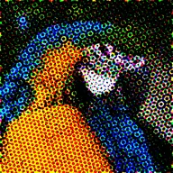

Raster punktowy CMYK

Odtwarza warstwę jak druk w czasopiśmie: kropkami w kolorach cyjan, magenta, żółtym i czarnym na czterech obróconych rastrach.
Ustawienia
| Ustawienie | Typ | Zakres | Domyślnie |
|---|---|---|---|
| Ilość | Liczba | Od 0 do 500 | 100 |
| Siła | Liczba | Od 0 do 1 | 0.5 |
| Czerń | Liczba | Od 0% do 100% | 0% |
| Kąt | Kąt | Od 0° do 3600° | 45° |
| Faza | Liczba | Od -1000 do 1000 | 0.5 |